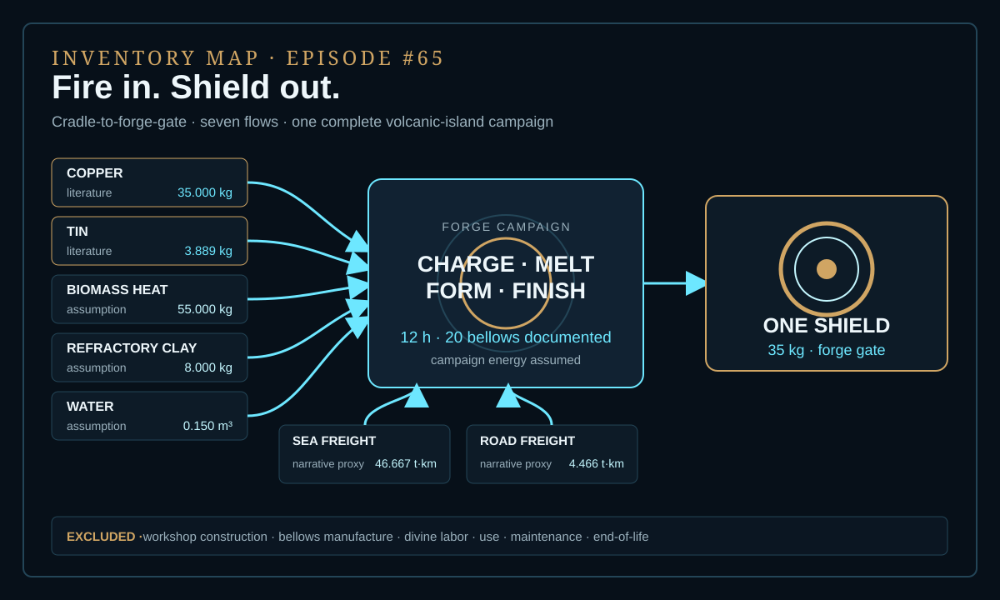
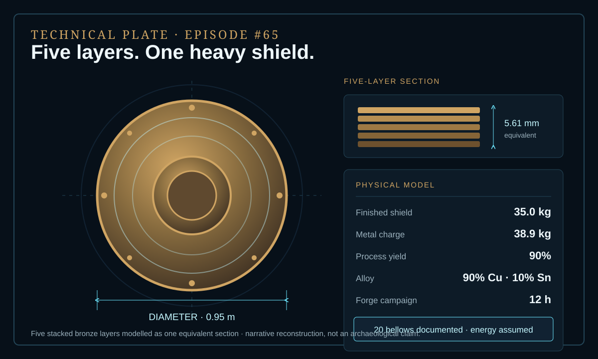
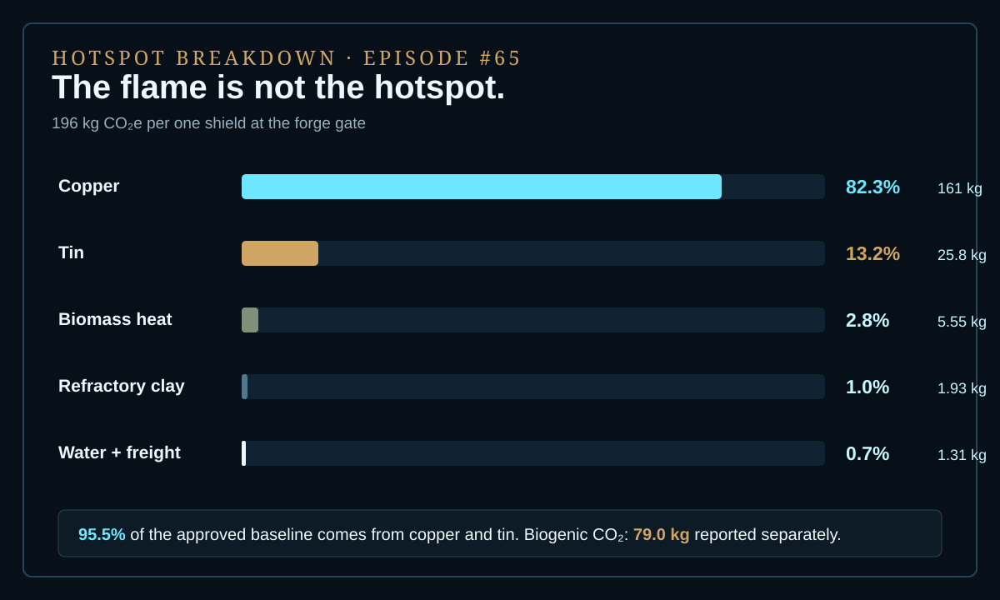

EPISODE #65 · MYTHS & LEGENDS
The Forge of Hephaestus
What is the carbon cost of forging Achilles' impossible shield?
THE SUBJECT
The ore burns hotter than the forge.
The approved model reconstructs one 0.95 m bronze shield made from five stacked layers and delivered after a single 12-hour forge campaign. A 35.0 kg finished shield requires a 38.9 kg metal charge at 90% process yield, modelled as a 90% copper and 10% tin alloy with a 5.61 mm equivalent thickness.
The five layers and twenty bellows belong to the documented narrative. Geometry, campaign energy and logistics close the physical model as declared assumptions or narrative proxies; this is a narrative reconstruction, not an archaeological claim. The cradle-to-forge-gate boundary includes metal supply, biomass heat, refractory clay, water and freight. Workshop construction, bellows manufacture, divine labor, use, maintenance and end-of-life remain outside it.
One heavy shield
35.0 kg finished mass and 0.95 m diameter.
Five bronze layers
A 38.9 kg charge at 90% yield, modelled as 90% copper and 10% tin.
One forge campaign
12 hours; twenty bellows are documented while campaign energy is assumed.
Metals dominate
Copper and tin contribute 95.5%; copper alone contributes 82.3%.
VISUAL MODEL
Seven flows enter one divine campaign
The inventory map keeps every modelled input visible. The technical plate freezes the shield geometry, alloy and yield before the footprint is calculated.


DETAILED LIFE CYCLE INVENTORY
Every flow enters the ledger
Seven disclosed factors reproduce the approved 196 kg CO₂e headline result. Direct and well-to-tank factors are combined where applicable.
| Stage | Component / activity | Activity data | Climate change | Modelling basis |
|---|---|---|---|---|
| Metal supply | Copper | 35.000 kg | 161.0 kg CO₂e · 82.3% | Literature flow. ICA LCA factor: 4.600 kg CO₂e/kg. |
| Metal supply | Tin | 3.889 kg | 25.79 kg CO₂e · 13.2% | Literature flow. ITA / Aurubis factor: 6.632 kg CO₂e/kg. |
| Forge campaign | Biomass heat | 55.000 kg | 5.55 kg CO₂e · 2.8% | Assumption. DEFRA 2026 wood-logs proxy for charcoal heat: 0.100878 kg CO₂e/kg. |
| Forge campaign | Refractory clay | 8.000 kg | 1.93 kg CO₂e · 1.0% | Assumption. DEFRA 2026 bricks proxy: 0.241803 kg CO₂e/kg. |
| Forge campaign | Water | 0.150 m³ | 0.054 kg CO₂e · <0.1% | Assumption. DEFRA 2026 factor: 0.362180 kg CO₂e/m³. |
| Inbound logistics | Sea freight | 46.667 t·km | 0.690 kg CO₂e · 0.4% | Narrative proxy. DEFRA 2026 factor: 0.014780 kg CO₂e/t·km. |
| Inbound logistics | Road freight | 4.466 t·km | 0.568 kg CO₂e · 0.3% | Narrative proxy. DEFRA 2026 factor: 0.127150 kg CO₂e/t·km. |
| Approved baseline total | 196 kg CO₂e | Per shield at the forge gate. | ||
Included
Copper and tin supply, biomass heat, refractory clay, water, sea freight, road freight and the forge campaign.
Excluded
Workshop construction, bellows manufacture, divine labor, use, maintenance and end-of-life.
Cut-off rule
Process scrap remains inside the campaign. No recycling credit is assigned at the forge gate.
Proxy disclosure
Wood logs proxy charcoal heat; bricks proxy refractory clay. Direct and well-to-tank factors are combined where applicable.
HOTSPOT
The flame is not the hotspot
Copper and tin carry 95.5% of the approved baseline. Biomass heat contributes 2.8%; logistics and water together remain at 0.67%.

Main result
196 kg CO₂e
One 35 kg, five-layer shield delivered at the forge gate.
Copper + tin
95.5%
Upstream metal production controls the baseline.
Copper
82.3%
161 kg CO₂e per shield from copper alone.
Separate disclosure
79.0 kg CO₂
Biogenic CO₂ reported outside the baseline.
Sensitivity A · Shield mass
20 kg → 112 kg CO₂e · −42.8%
Light shield.
35 kg → 196 kg CO₂e · baseline
50 kg → 279 kg CO₂e · +42.8%
Heavy shield.
Sensitivity B · Metal supply
Low-intensity → 69.8 kg CO₂e · −64.3%
Baseline → 196 kg CO₂e
High-intensity → 224 kg CO₂e
Same shield and forge; only copper and tin factors change.
Physical interpretation
Mass moves the result linearly. With all other campaign inputs held constant, more bronze creates proportionally more upstream burden.
Factor interpretation
Metal origin rewrites the footprint. Low-intensity supply reduces the baseline far more than any logistics adjustment in the approved model.
THE VERDICT
The hottest part of the forge is the metal supply chain.
The visible fire is not the dominant burden. The approved baseline assigns 95.5% to copper and tin: forge heat is visible, but the upstream metal supply chain is decisive.